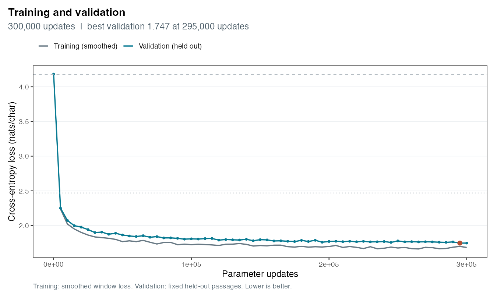
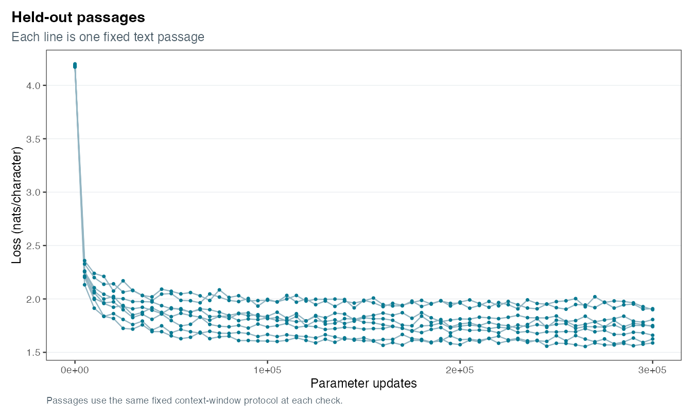
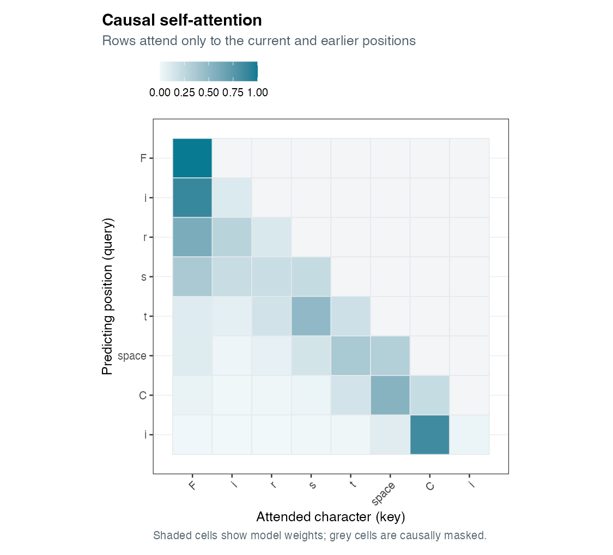

Before training
xg.BFPFbzvfMYbBwA tZrQqRZy3jmrhtngmq;! aWaSpLHIf'eauW,kDNOd,P;DLUVCjasqLZGPwpoIMwrg3&lThgLsyqhFQ-SSuw!Kfj$mlpAw.zdesCxn'q?&&?$T abzuNubQbg$zXogkULA'vfbY3:oSXIcn-UjUAzY:U YVT3pK.$Q3

The selected checkpoint has the lowest measured validation loss, not the most appealing sample. Both outputs use the same prompt and random sampling settings; the text below is the unedited model output.
xg.BFPFbzvfMYbBwA tZrQqRZy3jmrhtngmq;! aWaSpLHIf'eauW,kDNOd,P;DLUVCjasqLZGPwpoIMwrg3&lThgLsyqhFQ-SSuw!Kfj$mlpAw.zdesCxn'q?&&?$T abzuNubQbg$zXogkULA'vfbY3:oSXIcn-UjUAzY:U YVT3pK.$Q3
e Maring weld sound, a That look; our pressay cause cold ostandont: sot, so both unfame, Unbuit me whost to be bood eson. Comful To and my gal my greath fooble, that you, She no b

